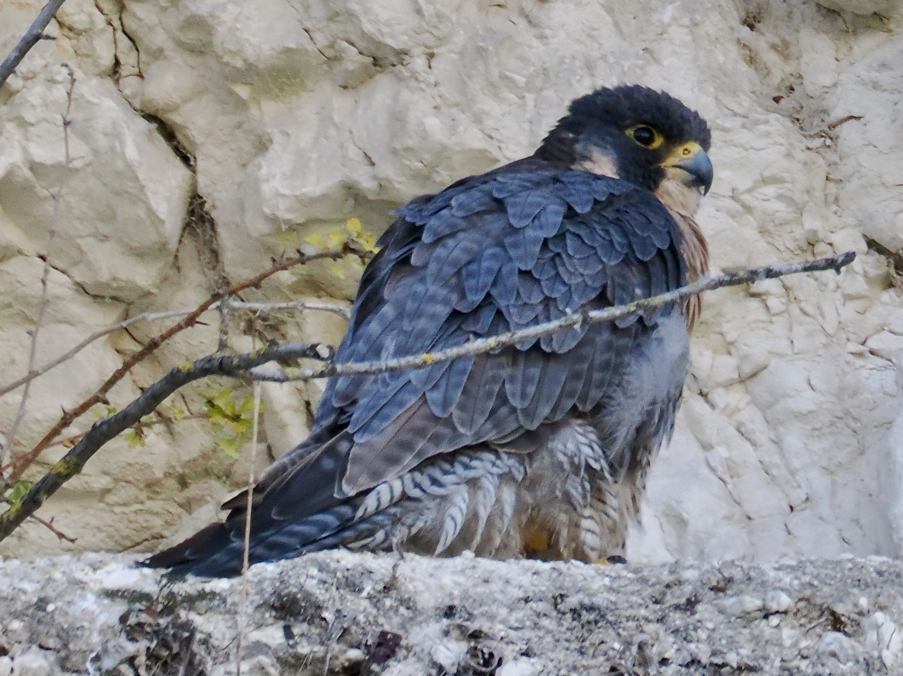
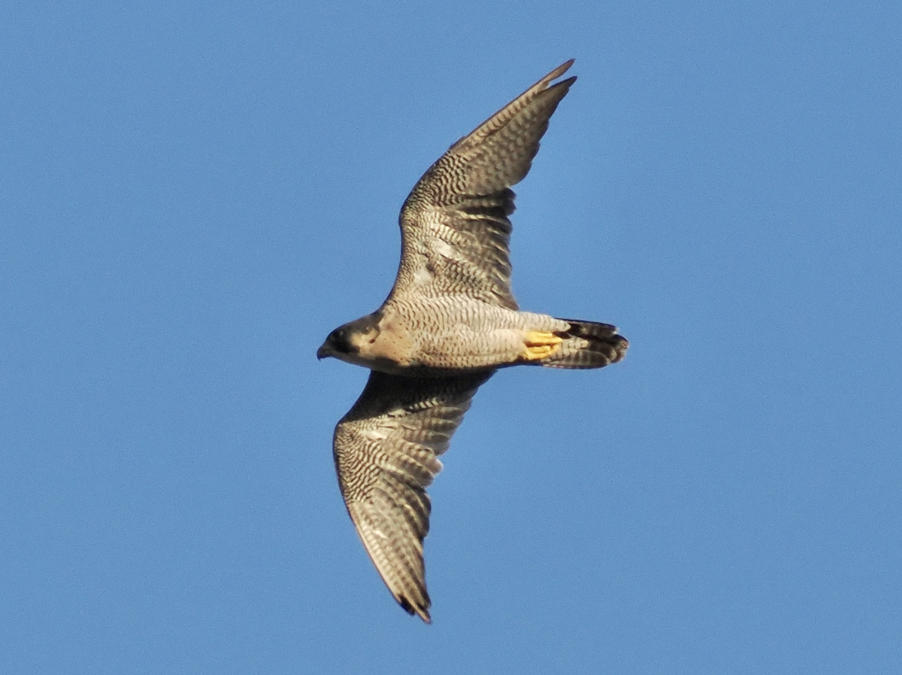

Peregrine Falcon
Falco peregrinus
Order: Falconiformes
Family: Falconidae

A medium-sized falcon with blue-grey upperparts and barred belly. Female is larger than male. Found in singles or pairs, traditionally around seaside cliffs; have adapted to urban environments. Many churches in the UK have been livestreaming Peregrines on their premises.

More often seen cruising, but is the fastest animal on the planet when stooping on prey.